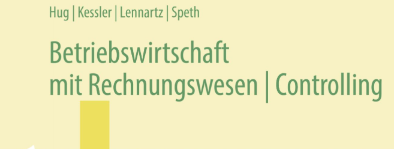

Lesen Sie M1 und berechnen Sie unter Anleitung die frei verfügbaren Eigenmittel und die verbleibende Finanzierungslücke. Bearbeiten Sie anschließend M2 in der festgelegten Reihenfolge Kapital/Haftung → Leitung/Kontrolle → Beteiligung/Aufwand; die Lehrkraft modelliert den Unterschied zwischen Rechtsnorm und Fallvereinbarung. Markieren Sie die beiden Behauptungen aus der Handlungssituation, die mit den Infokarten zu überprüfen sind.

S. 34 zur AG und S. 35 zur Firma/Satzung, ergänzend zu M2. ca. 50 Min.